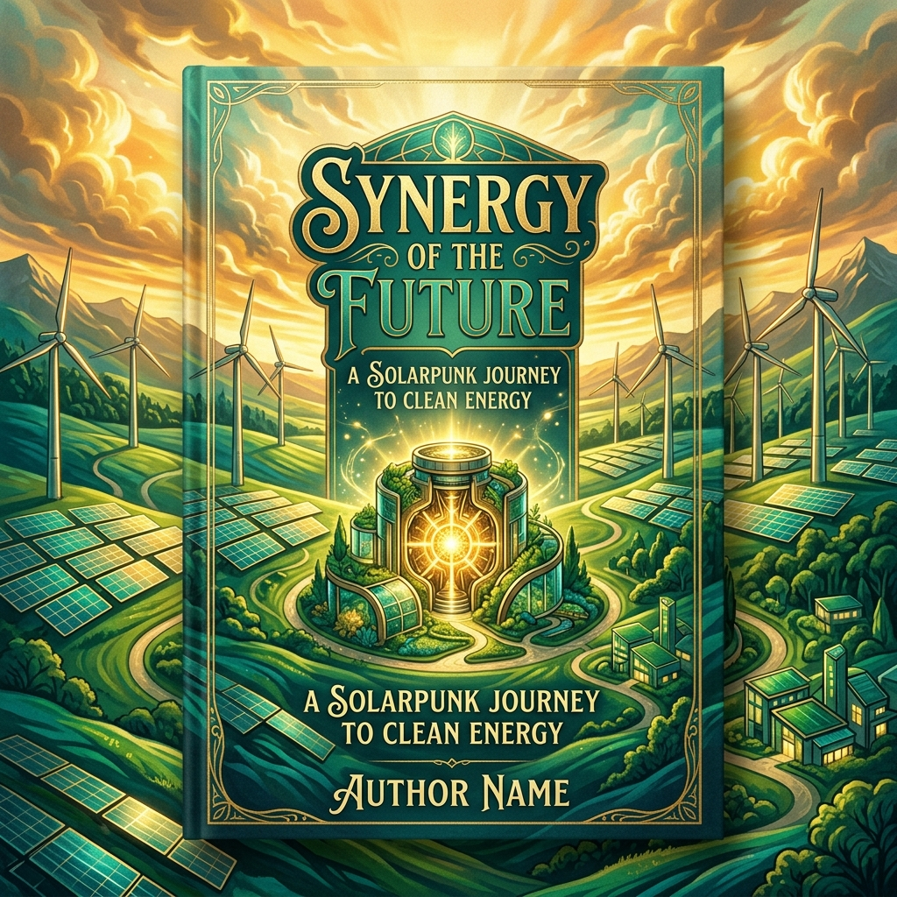

« "Nous ne choisissons pas les questions que l'histoire nous pose. Nous choisissons seulement comment nous y repondons. Et ce choix, fait collectivement ou subi faute de l'avoir fait, definit ce que nous devenons."Elena Vasilieva, notes preparatoires pour son intervention au Parlement europeen, octobre 2026 »

Tartu, Estonie. Un appartement au dernier etage d'un immeuble du XIXe siecle. Fin octobre 2026.
Elena Vasilieva a pose ses notes sur la table de la cuisine. Trois semaines s'sont ecoulees depuis son intervention devant le Parlement europeen a Bruxelles. Elle a encore dans les oreilles les questions des parlementaires, certaines precises et exigeantes, d'autres qui revelaient que leur auteur n'avait pas lu le rapport qu'on lui avait remis. C'est toujours ainsi.
Ce qui l'occupe ce soir, c'est une question que personne ne lui a posee lors de cette seance. Elle en a parle de gouvernance de l'IA, de transparence algorithmique, de droits fondamentaux dans les systemes automatises. Elle a dit, et elle le repete depuis des annees, que la politique est le nouveau code. Que les regles que nous ecrivons pour gouverner l'IA sont aussi importantes que les lignes de code qui la font fonctionner.
Mais ce soir elle pense a une question en aval de celle-la. Tout ce qu'elle a dit sur la gouvernance presuppose que l'electricite qui fait tourner ces systemes soit disponible. Que les metaux qui les composent aient ete extraits, traites, assembles. Que les cables qui les connectent soient intacts. Que quelqu'un, quelque part, ait pris les decisions necessaires pour que tout cela soit possible.
Ces decisions ne sont pas techniques. Elles sont politiques. Et elles se prennent en ce moment, ou plutot elles se ne prennent pas, dans une multitude de forums, de legislatures et de conseils d'administration dont les agendas sont domines par l'urgence du trimestre et non pas par la necessite de la decennie.
Elena prend un stylo et commence a ecrire. Non pas pour Bruxelles, cette fois. Pour elle-meme. Pour clarifier ce qu'elle pense vraiment.
Ce que sept chapitres nous ont appris
Avant de formuler des choix, il est utile de faire le point sur ce que ce voyage a travers l'economie energetique de l'intelligence artificielle nous a enseigne. Non pas pour recapituler (le lecteur qui a parcouru ces pages n'a pas besoin d'un resume), mais pour identifier les verites qui resistent quand on les soumet au tamis de la nuance.
Les certitudes durables
La premiere certitude est que la revolution de l'intelligence artificielle est une revolution industrielle, pas une revolution intellectuelle. Elle a des usines, ses data centers. Elle a ses matieres premieres, les metaux critiques, les mineraux de l'electronique. Elle a ses dechets, les equipements en fin de vie, la chaleur dissipee, l'eau evaporee. Elle transforme le monde physique avec la meme brutalite que la vapeur a transforme l'Angleterre du XIXe siecle. Ignorer cette materialite n'efface pas ses consequences.
La deuxieme certitude est que les murs physiques que ce livre a identifies sont reels et immediats pour certains d'entre eux. Le goulot des semiconducteurs avances ne se resoudra pas avant la fin des annees 2020 au mieux. Les files d'attente de raccordement electrique en Europe et aux Etats-Unis se comptent en annees, pas en mois. La dependance aux metaux critiques dont l'extraction est concentree dans quelques pays geopolitiquement sensibles ne se diversifie pas en un cycle electoral. Ces contraintes ne sont pas des projections pessimistes. Elles sont documentees, chiffrees, et visibles pour quiconque prend la peine de regarder.
La troisieme certitude est que les reponses technologiques existent, progressent, et qu'elles sont suffisamment prometteuses pour justifier un optimisme raisonne. L'efficacite algorithmique s'ameliore a un rythme impressionnant. Les nouvelles architectures de puces offrent des sauts de performance-par-watt spectaculaires. Le stockage d'energie se diversifie et ses couts baissent. La fusion nucleaire n'est plus un horizon perpetuellement lointain mais un pari dont des acteurs serieux parient les milliards. Ces progres ne suffisent pas a eux seuls, mais ils donnent du temps et montrent que la trajectoire n'est pas une fatalite.
La quatrieme certitude est que le paradoxe de Jevons traverse tout. Chaque gain d'efficacite rend l'IA moins chereuse, ce qui stimule de nouveaux usages, ce qui consomme davantage. Ce paradoxe n'est pas une fatalite non plus, mais il ne se resout pas par la technologie seule. Il se resout par la politique, par la regulation, par la culture collective autour des usages. Par des choix.
Les incertitudes que l'honnettete oblige a nommer
Il y a des choses que ce livre ne sait pas, et que personne ne sait vraiment. La trajectoire exacte de la demande energetique de l'IA d'ici 2030 depend de decisions qui ne sont pas encore prises. Si une AGI fonctionnelle est developpee dans les cinq prochaines annees, tout ce que nous avons projete est obsolete. Si la fusion commerciale arrive en 2030, la contrainte energetique change de nature. Si une crise geopolitique majeure en mer de Chine perturbe l'approvisionnement en semiconducteurs, le rythme du deploiement de l'IA ralentit brutalement.
L'honnettete intellectuelle exige de reconnaitre que ce livre, comme tout livre sur un sujet en mouvement aussi rapide, sera partiellement obsolete dans trois ans. Ce n'est pas une raison de ne pas l'ecrire. C'est une raison de le lire avec le grain de sel appropriatee et de continuer a suivre l'evolution des faits.
La sobriete numerique : proportionnalite, pas ascetisme
Le terme sobriete numerique est souvent percu, surtout par ceux qui travaillent dans le secteur technologique, comme une menace camouflée. Comme si parler de sobriete signifiait abandonner les benefices de la technologie, revenir a des pratiques artisanales, refuser le progres. Cette perception est un contresens.
La sobriete, en thermodynamique, c'est l'efficacite maximale dans l'utilisation d'une ressource. Ce n'est pas la privation. C'est le refus du gaspillage. Ces deux choses sont tres differentes, et confondre les deux revient a se donner une bonne raison de ne rien changer.
La hierarchie des usages
La question qui se pose concrètement est celle de la proportionnalite entre l'energie consommee par un usage de l'IA et la valeur sociale, medicale, economique ou cognitive qu'il produit.
Un systeme d'IA qui analyse des images medicales et detecte des cancers du poumon avec une precision superieure aux radiologues humains, au benefice de patients dans des regions sans radiologue disponible : quel que soit son cout en electricite, il y a peu de gens prets a argumenter serieusement que ce n'est pas un usage legitime de cette energie.
Un modele d'IA qui genere des milliers d'images de stock pour illustrer des articles marketing, consommant la meme electricite par image generee, en remplacement d'illustrations qui auraient pu etre achetees a des artistes humains pour un cout economique comparable : la question de la proportionnalite est plus debatable.
Entre ces deux extremes, un spectre continu d'usages dont la valeur sociale varie enormement et dont la consommation energetique est souvent similaire. Il serait irealiste de vouloir reglementer chaque usage de l'IA de maniere granulaire. Mais il est tout a fait raisonnable d'exiger que les outils de mesure existent, que la transparence sur la consommation soit la norme, et que les signaux prix refletent les couts reels, energie, eau, metaux critiques, pour guider les decisions d'investissement et d'usage vers les applications les plus justifiees.
Ce que la sobriete n'est pas
La sobriete numerique n'est pas le refus des grands modeles de langage ou de la generation d'images ou de la voix artificielle. Ces outils ont des usages qui justifient leur existence. La sobriete, c'est l'exigence que ces outils soient utilises avec conscience de leur cout, dans des contextes ou ce cout est justifie par la valeur produite.
La sobriete n'est pas non plus un projet nostalgique. Retourner a l'ere pre-numerique n'est ni possible ni desirable. Ce que la sobriete demande, c'est d'eviter de deployer des capacites de calcul massives pour des taches qui ne les justifient pas, de ne pas allumer des centres de donnees entiers la nuit pour entrainer des modeles dont les usages prevus sont triviaux, de faire durer les equipements plus longtemps quand c'est techniquement possible, de choisir des services plus efficaces quand la qualite est equivalente.
En d'autres termes, la sobriete numerique c'est l'application au numerique du meme principe d'ingenierie que celui qu'un bon ingenieur applique a n'importe quel systeme : ne pas sur-dimensionner, ne pas gaspiller, choisir la solution la mieux adaptee au probleme reel.
La sobriete n'est pas l'ennemie de l'innovation. Elle en est souvent le moteur. Les contraintes energetiques qui ont force les constructeurs d'automobiles a concevoir des moteurs plus efficaces ont produit des innovations qui ont beneficie a l'ensemble de l'industrie. Les contraintes qui forcent les editeurs de modeles d'IA a optimiser leur efficacite energetique produisent des algorithmes meilleurs pour tout le monde.
La regulation internationale : necessaire, difficile, urgente
La sobriete individuelle et organisationnelle est une condition necessaire mais pas suffisante. Les comportements individuels, meme s'ils sont vertueux, ne peuvent pas compenser l'absence de cadres collectifs qui alignent les incitations de l'ensemble des acteurs.
La regulation du numerique et de l'energie est aujourd'hui principalement nationale ou au mieux europeenne. Elle fait face a un objet qui est fondamentalement mondial. Un modele d'IA est entraine dans des serveurs distribues sur plusieurs continents, deployé via des plateformes cloud mondiales, utilise par des milliards de personnes dans tous les pays. La consommation energetique associee ne respecte pas les frontieres des Etats-nations.
Pourquoi une regulation nationale seule ne suffit pas
Si la France ou l'Union europeenne impose des standards exigeants de reporting energetique et des limites d'emissions aux data centers sur leur territoire, les operateurs peuvent simplement transferer leurs activites les plus gourmandes en energie dans des pays sans ces contraintes. La desindustrialisation du numerique vert n'est pas une metaphore : c'est un risque documenté dans tous les domaines ou la regulation est asymetrique.
La solution n'est pas de renoncer a la regulation europeenne sous pretexte qu'elle sera contournee. L'Union europeenne a montre avec le RGPD qu'une reglementation suffisamment exigeante, appliquee a un marche suffisamment important, oblige les acteurs mondiaux a s'y conformer ou a y renoncer, et qu'ils choisissent presque toujours la conformite. Le meme principe peut s'appliquer a la dimension energetique.
Mais cela ne suffit pas non plus a regler les emissions de data centers situes hors d'Europe qui servent des utilisateurs europeens. Une taxe sur les emissions carbone des services numeriques consommes en Europe, calculee sur la base du mix energetique du pays d'hebergement et de la consommation estimee du service, serait un mecanisme d'ajustement aux frontieres analogue au CBAM (Carbon Border Adjustment Mechanism) que l'Union europeenne applique deja aux importations industrielles. Ce n'est pas une idee marginale : plusieurs groupes de recherche et certains parlementaires europeens l'explorent activement.
Les modeles de coordination internationale existants
La recherche d'un cadre international de regulation du numerique n'a pas a partir de zero. Il existe des precedents dont les architectures peuvent inspirer des adaptations.
Le schema CORSIA (Carbon Offsetting and Reduction Scheme for International Aviation) impose depuis 2021 aux compagnies aeriennes de compenser les emissions de leurs vols internationaux au-dela d'un niveau de reference. Le mecanisme est imparfait, les credits de compensation sont de qualite variable, et la couverture n'est pas universelle. Mais il existe, il crée des incitations, et il constitue un precedent de coordination internationale sur les emissions d'un secteur mondial.
Le secteur maritime a adopte en 2023 une strategie de l'Organisation Maritime Internationale visant la neutralite carbone d'ici 2050, avec des etapes intermediaires contraignantes. La negociation a ete longue et les engagements initiaux insuffisants, mais un cadre global existe.
Le numerique est plus difficile a regler que l'aviation ou le maritime, parce que ses infrastructures sont plus diffuses, ses acteurs plus nombreux et ses flux moins traçables. Mais les principes sont les memes : identification des emissions, attribution aux responsables, mecanisme de tarification ou de plafonnement, verification independante. Les obstacles sont politiques et economiques, pas techniques.
La tension Nord-Sud dans la regulation du numerique
Il y a une tension profonde dans toute discussion sur la regulation internationale du numerique qui merite d'etre nommee directement : la tension entre les pays qui ont deja deploye massivement ces infrastructures et les pays qui aspirent a les deployer pour leur propre developpement.
Les pays du Sud global, l'Afrique, l'Asie du Sud-Est, l'Amerique latine, ont une relation tres differente au numerique que les pays occidentaux. Pour beaucoup d'entre eux, le deploiement de l'IA et des infrastructures numeriques n'est pas un luxe a rationner mais un levier de developpement economique, d'acces aux services de sante et d'education, de reduction des inegalites. Leur dire de limiter leur deploiement au nom d'une empreinte carbone globale est une position moralement intenable si elle n'est pas accompagnee d'un transfert de technologies propres et de financements adequats.
C'est exactement la meme tension que celle qui structure les negociations climatiques depuis la COP de Kyoto : les pays developpes ont brule du charbon pendant deux siecles pour se developper, et ils demandent maintenant aux pays en developpement de choisir des voies plus propres, sans toujours proposer les moyens de le faire. La legitimite de cette demande, meme si elle est justifiee sur le fond, est constamment sapee par cette asymetrie historique.
Une regulation internationale du numerique qui ne resout pas cette tension sera inefficace ou injuste, probablement les deux. Elle ne peut pas l'eviter.
L'ethique de l'allocation energetique : qui decide, et comment
La question de savoir qui decide quels usages de l'IA meritent quelle quantite d'energie est une question politique fondamentale. Elle ne peut pas etre resolue par le marche seul, parce que le marche ne valorise pas l'ensemble des dimensions pertinentes. Elle ne peut pas etre resolue par des experts seuls, parce que la definition de la valeur sociale est une question democratique, pas technique. Elle ne peut pas etre resolue par des individus seuls, parce que les effets sont systemiques.
Ce que la tarification du carbone peut et ne peut pas faire
La tarification du carbone, qu'elle prenne la forme d'une taxe ou d'un systeme de quotas echangeables, est l'instrument economique le plus souvent recommande pour internaliser les couts environnementaux dans les decisions economiques. Son principe est solide : si l'electricite au charbon couts ce qu'elle coute vraiment, y compris ses externalites environnementales, les acteurs economiques ont une incitation a preferer l'electricite renouvelable ou nucleaire.
Le systeme europeen d'echange de quotas d'emissions (ETS) fonctionne, avec des imperfections connues et en cours de correction. L'extension de ce systeme au secteur numerique, qui en etait largement exempte jusqu'a recemment, est en discussion. Une telle extension changerait les calculs economiques des operateurs de data centers de maniere significative.
Mais la tarification du carbone a des limites que ses partisans les plus enthousiastes reconnaissent parfois insuffisamment. Elle ne distingue pas entre les usages de l'IA selon leur valeur sociale. Elle traite de la meme maniere le kilowattheure consomme pour detecter un cancer et celui consomme pour generer du contenu publicitaire personnalise. Elle n'adresse pas les questions de justice distributive, qui paie le prix de la transition, qui en beneficie. Et elle peut etre politiquement fragile, comme l'a montre la crise des Gilets Jaunes en France, declenchee en partie par une hausse de la taxe carbone sur les carburants qui touchait proportionnellement plus les menages a faibles revenus des zones rurales.
La gouvernance democratique des usages de l'IA
Il y a un principe de gouvernance que je veux defendre explicitement, parce qu'il est souvent absent des debats techniques sur l'IA : les decisions sur les usages prioritaires de l'IA, et donc sur l'allocation de l'energie qu'ils requierent, doivent etre prises par des processus democratiques legitimes, pas par les seules entreprises qui developpent ces technologies ou les seuls experts qui les etudient.
Cela ne veut pas dire que chaque decision d'investissement dans un systeme d'IA doit etre soumise a un referendum. Les democraties modernes fonctionnent par representation, delegation et regulation : les citoyens delegent a des representants le soin d'etablir les regles, et les entreprises operent dans le cadre de ces regles. Le probleme actuel est que les regles qui encadrent les usages energetiques de l'IA sont insuffisantes, tardives et souvent contournables.
Ce que la gouvernance democratique peut produire, concrètement, c'est une hierarchie explicite des usages prioritaires. Des processus de consultation publique sur les grands projets d'infrastructure numerique, analogues aux enquetes publiques sur les grands projets d'infrastructure energetique. Des mecanismes de representation des impacts dans les territoires affectes, les riverains d'un data center qui consomme l'eau d'un aquifere regional ont un droit a etre entendus. Et des mecanismes d'evaluation et de revision reguliers, parce que les technologies et leurs impacts evoluent rapidement.
La question intergenerationnelle
Il y a une dimension de l'ethique de l'allocation energetique que les processus democratiques ordinaires gèrent mal : la question des generations futures. Les decisions que nous prenons aujourd'hui sur l'extraction des metaux critiques, sur l'utilisation des ressources en eau, sur les emissions de CO2, auront des consequences pour des personnes qui ne votent pas encore parce qu'elles ne sont pas encore nees.
Cette consideration n'est pas nouvelle dans la philosophie politique : John Rawls et d'autres ont theorise les obligations envers les generations futures. Elle est cependant particulierement aigue dans le contexte de la transition numerique-energetique, parce que les rythmes sont tres asymetriques. Les benefices de l'IA se materialisent en mois ou en annees. Les consequences de l'extraction miniere excessive ou du rechauffement climatique excessif se materialisent en decennies et en siecles.
Les principes qui permettraient de mieux prendre en compte cette asymetrie existent : le principe de precaution pour les technologies dont les impacts a long terme sont mal connus, le principe de reversibilite qui prefere les decisions qui preservent des options futures a celles qui les ferment, le principe d'equite intergenerationnelle qui exige que les generations presentes ne consomment pas irreversiblement des ressources dont les generations futures ont besoin. Ces principes sont plus faciles a enoncer qu'a appliquer dans des systemes politiques qui fonctionnent sur des cycles de quelques annees.
Les quatre choix collectifs urgents
Je vais formuler maintenant ce que ce livre, apres sept chapitres de cartographie et d'analyse, permet d'identifier comme des choix collectifs qui meritent d'etre faits deliberement plutot que subis par defaut. Ces choix ne sont pas des solutions techniques. Ce sont des orientations politiques qui definissent le cadre dans lequel les solutions techniques peuvent se deployer.
Ils font echo aux quatre piliers formules dans le premier volume de cette collection : transparence radicale, distribution du pouvoir, revolution educative, gouvernance agile. Mais ils les declinent sur le terrain de l'energie et de la materialite de l'intelligence artificielle.
Choix 1 Mesurer et rendre visible
Aucun progres serieux n'est possible sans mesure. L'empreinte energetique et carbone des services numeriques doit etre rendue obligatoirement visible, avec des methodologies standardisees, sur les trois scopes, verifiees par des auditeurs independants accrédites. Pas une declaration volontaire. Une obligation reglementaire avec des sanctions credibles en cas de fausse declaration. Cette transparence doit s'appliquer aussi bien aux grands hyperscalers qu'aux startups deployant des services en cloud. Elle est la condition de possibilite de tous les autres choix.
Choix 2 Tarifer le vrai cout
L'extension du systeme europeen d'echange de quotas d'emissions au secteur numerique est techniquement et juridiquement possible. Elle doit s'accompagner d'une tarification de l'eau utilisee pour le refroidissement des data centers dans les regions en stress hydrique, et de mecanismes d'ajustement aux frontieres pour eviter les fuites de carbone vers des juridictions moins regulees. Ces instruments ne doivent pas etre conçus pour taxer la technologie mais pour faire payer ses couts reels, permettant aux usages a haute valeur sociale de continuer a se developper et aux usages peu justifies de voir leur cout reflecter leur impact.
Choix 3 Investir dans l'infrastructure de l'abondance bas-carbone
Le nucleaire et les renouvelables ne sont pas adversaires dans ce choix. Ils sont complementaires et tous deux necessaires. Un programme europeen d'investissement massif dans la capacite de production et de transport d'electricite bas-carbone, des cables de transmission longue distance aux SMR en passant par les batteries de reseau et les interconnexions transfrontalieres, est la condition energetique de la souverainete numerique europeenne. Cet investissement ne peut pas etre entierement prive : les infrastructures de reseau sont des biens publics dont les horizons de retour sur investissement depassent les cycles de financement prive ordinaires. Il requiert une planification a long terme que seuls les Etats et l'Union europeenne peuvent fournir.
Choix 4 Former la generation qui gerera cette transition
La formation aux technologies energetiques et numeriques n'est pas seulement un enjeu de competitivite economique. C'est un enjeu civique. Des citoyens capables de comprendre les enjeux energetiques de l'IA sont des citoyens capables de participer de maniere eclairee aux decisions collectives qui les concernent. Cela implique une refonte des formations d'ingenieurs pour integrer systematiquement la dimension energetique dans la conception des systemes informatiques. Cela implique une formation continue des actifs dont les metiers sont transformes. Et cela implique une initiation aux concepts fondamentaux de l'informatique et de l'energie des l'ecole primaire, pas comme un cours a part mais comme une dimension transversale de la culture generale.
La singularite et la thermodynamique de l'information
Ce livre s'est deliberement tenu dans le registre du possible et du probable. Il a evite les scenarios de rupture radicale qui relevent plus de la prospective speculative que de l'analyse rigoureuse. Mais il serait intellectuellement incomplet de ne pas aborder, dans ce chapitre final, l'horizon le plus incertain et le plus consequent de tous : la possibilite d'une intelligence artificielle generale, et ses implications energetiques.
Ce que l'AGI changerait aux equations de ce livre
Le terme AGI, artificial general intelligence, designe un systeme capable de performer de maniere comparable aux humains sur l'ensemble des taches cognitives generales, pas seulement sur des taches specifiques. C'est une definition qui cache des debates profonds sur ce que signifie vraiment l'intelligence generale, mais pour les fins de cette discussion, ce qui compte est l'implication pratique : un systeme AGI en fonctionnement continu, appliqué a la resolution de problemes complexes dans des domaines multiples simultanement, consommerait des quantites d'energie que les projections actuelles ne modélisent pas.
Si une AGI etait effectivement deployee et chargee d'optimiser la gestion du reseau electrique mondial, de planifier la transition energetique, de concevoir les materiaux de la prochaine generation de puces, de decouvrir de nouveaux traitements medicaux, elle pourrait generer des gains de productivite et des solutions a des problemes que l'humanite peine a resoudre. Elle consommerait probablement, pour ce faire, des quantites d'electricite qui se mesureraient en terawattheures par an.
La question energetique de l'AGI est donc potentiellement autoreference : pour qu'un systeme AGI puisse aider a resoudre la crise energetique, il faudrait d'abord resoudre suffisamment la crise energetique pour l'alimenter. Ce n'est pas un argument contre la recherche sur l'AGI. C'est une raison supplementaire pour traiter les questions energetiques de l'IA actuelle comme une priorite, pas comme un probleme a regler plus tard.
Les limites physiques de la pensee
Il y a une beaute dans le fait que la question de l'efficacite energetique du calcul trouve ses limites dans les lois les plus fondamentales de la physique. En 1961, Rolf Landauer, un physicien d'IBM, a formule ce qui est devenu le principe de Landauer : effacer un bit d'information dans un systeme a une temperature T requiert une energie minimale egale a kT ln(2), ou k est la constante de Boltzmann. A temperature ambiante, cela represente environ 3 attojoules par operation d'effacement.
Les processeurs actuels consomment environ dix millions de fois plus d'energie par operation logique que cette limite thermodynamique. La limite de Landauer est un horizon theorique tres lointain, que les technologies actuelles n'approchent pas. Mais elle signifie quelque chose d'important : il existe une frontiere physique absolue a l'efficacite du calcul. On ne peut pas penser sans consommer d'energie. La question n'est pas si le calcul coute de l'energie, mais combien.
Les projets les plus ambitieux de l'histoire de la technologie, qu'il s'agisse de la sphere de Dyson (une megastructure hypothetique qui capturerait l'integralite de l'energie d'une etoile) ou de l'ordinateur quantique universel, se heurtent tous, a des horizons differents, a des limites thermodynamiques que la physique impose sans negociation. L'intelligence, mecanique ou biologique, a un cout energetique irreductible.
Le cercle vertueux qui merite d'etre tente
Il y a un scenario que les chapitres precedents ont mentionne de maniere fragmentaire et qu'il vaut la peine d'assembler explicitement en conclusion. L'IA accelere la recherche en physique des materiaux, en chimie, en biologie moleculaire. Cette acceleration inclut la recherche sur la fusion nucleaire, sur les nouveaux materiaux de stockage d'energie, sur les architectures de calcul ultra-efficaces. Si ces recherches aboutissent, elles pourraient fournir les ressources energetiques et les outils computationnels necessaires pour alimenter une IA encore plus puissante, qui accelererait encore davantage la recherche.
Ce cercle vertueux n'est pas garantie. Il pourrait aussi produire un cercle vicieux si les ressources energetiques ne suivent pas le rythme de la demande de calcul. Il pourrait produire des applications dont les benefices restent concentres dans quelques mains si la gouvernance n'est pas au rendez-vous. Il pourrait generer des risques de securite que la recherche sur l'alignement des IA n'aura pas su anticiper.
Mais ce cercle vertueux est possible. Et c'est cette possibilite qui justifie l'investissement, l'effort, la vigilance, et la mise en place des guardrails politiques, economiques et ethiques qui permettraient de le rendre probable plutot que seulement possible.
Retour à Mesa, Arizona. 3 heures du matin.
C'est par cette scène que ce livre a commencé. Ce pôle de centres de données géant s'étendant dans la banlieue de Phoenix, consommant des centaines de mégawatts d'électricité, traitant des millions de requêtes par jour et exigeant des millions de litres d'eau quotidienne pour refroidir ses installations (à moins d'adopter des technologies sans eau en circuit fermé). La nuit du désert autour, les étoiles au-dessus, et dans les salles climatisées, les serveurs qui traitent en silence les questions de millions de personnes endormies de l'autre côté de la planète.
Ce pôle industriel n'est pas un symbole de démesure. Il n'est pas non plus un symbole de progrès inévitablement bénéfique. Il est le miroir de nos choix collectifs, faits et non faits.
Sa taille résulte de décisions d'investissement prises par des entreprises qui répondaient à une demande réelle, avec des capitaux dont la disponibilité reflète les priorités de l'économie mondiale actuelle. Son impact environnemental dépend des règles qui encadrent ses émissions et sa consommation de ressources. Sa localisation dans le désert de l'Arizona résulte de choix de politique fiscale locale rendant ce territoire attractif, malgré des tensions hydriques et électriques qui forcent aujourd'hui les opérateurs à envisager le couplage direct avec de futurs réacteurs SMR ou le redémarrage de centrales nucléaires à l'arrêt.
Si des règles différentes avaient été en vigueur, le développement se serait fait sous d'autres contraintes : avec une efficacité maximale dès l'origine, une eau préservée et une alimentation bas-carbone intégrée d'office. Ces choix n'auraient pas été plus coûteux techniquement à long terme. Ils auraient simplement exigé de planifier plutôt que de réagir dans l'urgence. C'est toute la différence.
Elena Vasilieva a ecrit, dans ses notes de ce soir d'octobre a Tartu, une phrase que je vais emprunter pour conclure ce livre, parce qu'elle dit avec la precision des meilleurs esprits ce que sept chapitres ont tente de demontrer.
Dans le premier volume, j'ai dit que la politique est le nouveau code. Ce volume ajoute une couche en dessous. L'energie est le nouveau territoire. Qui la produit, qui la distribue, qui decide de ses usages, a quel prix et pour quels beneficiaires : voila les questions politiques fondamentales de cette decennie. Et comme pour l'IA elle-meme, le futur energetique de l'intelligence ne sera pas ce que la technologie impose. Il sera ce que nous choisirons d'en faire.
Ce choix est difficile parce qu'il est collectif dans un monde qui encourage les decisions individuelles. Il est difficile parce qu'il engage des horizons de temps longs dans des systemes politiques qui privilegient le court terme. Il est difficile parce qu'il requiert une coordination internationale dans un monde fragmenté par des tensions geopolitiques croissantes.
Il n'est pas impossible. L'humanite a resolu des problemes collectifs de cette ampleur. Pas toujours bien, pas toujours a temps, mais elle les a resolus. L'elimination de la variole. La reconstruction de l'apres-guerre. La prevention de la destruction totale des pecheries de l'Atlantique Nord par des accords de gestion des quotas. Le protocole de Montreal sur les substances qui appauvrissent la couche d'ozone. Ces exemples ne sont pas des modeles parfaits. Ils sont des preuves de capacite.
La question de l'energie de l'intelligence artificielle est l'une des questions definitoires de notre epoque. Nous ne pourrons pas dire que nous ne savions pas. Les donnees sont disponibles, les projections sont publiees, les tensions sont visibles. Ce que nous pourrons dire, dans dix ans, c'est ce que nous avons fait, ou ce que nous n'avons pas fait, avec ce que nous savions.
La reponse a cette question depend de chacun, et de tous ensemble.
Note de l'auteur
Ce livre est le second volume d'une collection qui explore les implications profondes de la revolution de l'intelligence artificielle sur nos societes, nos economies et notre relation au monde physique. Le premier volume, L'Odyssee de l'IA, examinait les trajectoires possibles de l'IA elle-meme, a travers les destins fictifs de Marc a Lyon, Wanjiru a Nairobi et Elena Vasilieva a Bruxelles, et formulait quatre principes pour une gouvernance de l'IA a la hauteur des enjeux : transparence radicale, distribution du pouvoir, revolution educative, gouvernance agile.
Ce second volume a voulu descendre d'un etage, des questions de gouvernance aux questions physiques qui les conditionnent. Pas de gouvernance de l'IA sans electricite pour la faire tourner. Pas de transition energetique intelligente sans les outils numeriques pour l'optimiser. Ces deux niveaux sont inseparables, et la collection essaie de les tenir ensemble.
Les chiffres et les faits cites dans ce livre sont ceux de fevrier 2026. Dans un domaine qui evolue aussi rapidement, certains seront depasses d'ici la publication. J'ai choisi la precision sur la durabilite, en indiquant systematiquement les sources ou la nature des estimations, de facon a ce que le lecteur puisse evaluer la fragilite de chaque donnee.
Ce travail a beneficie de nombreuses conversations avec des ingenieurs, des chercheurs, des decideurs et des citoyens ordinaires qui reflechissent a ces questions avec serieux. Il porte aussi les traces d'une collaboration avec des outils d'intelligence artificielle utilises comme assistants de recherche et de redaction. Cette collaboration est elle-meme une illustration des tensions que le livre decrit : ces outils sont utiles, ils ont un cout energetique, et ils posent des questions sur la nature de la creation intellectuelle que je n'ai pas toutes les reponses.
Geoffroy
Fevrier 2026
Fin du Volume II
L'Odyssee de l'energie
Le carburant invisible de l'intelligence artificielle